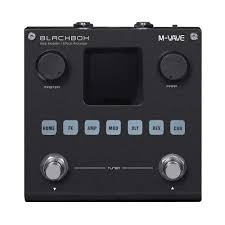

Music expresses that which cannot be put into words and that which cannot remain silent.
BLACKBOX is a portable and multifunctional guitar/bass effect unit with 80 editable presets. Users can also customize the effect chain and save them. It has a built-in battery that can last up to 10 hours on a full charge. BLACKBOX includes 6 effect modules, featuring Noise Gate, Boost, Compressor, 20 preamps, 3-band EQ, 7 modulations, 5 delays, 6 reverbs, and 20 IR CAB slots.
<>Relative URLs .